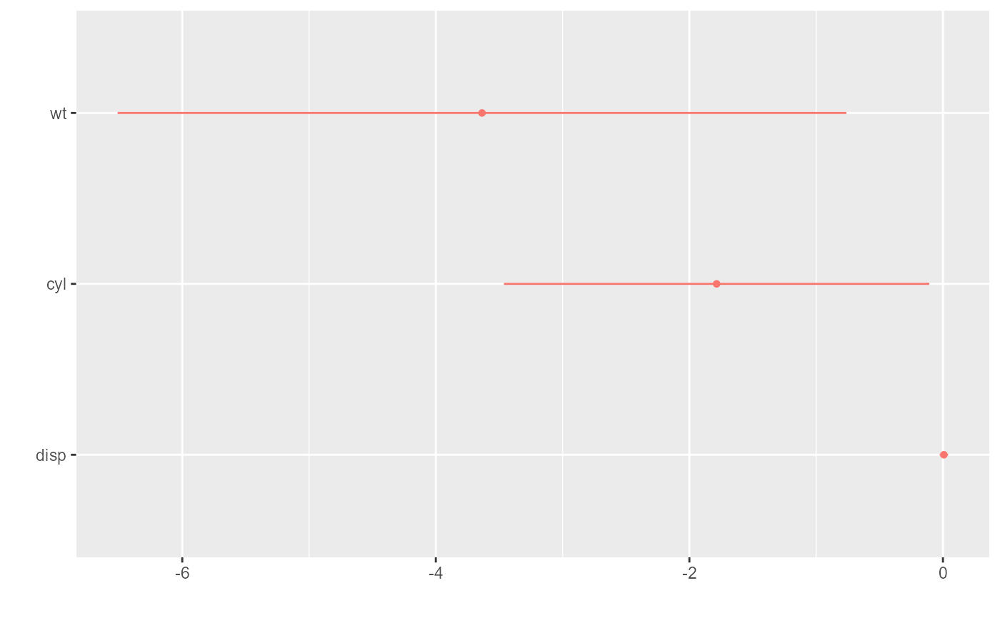
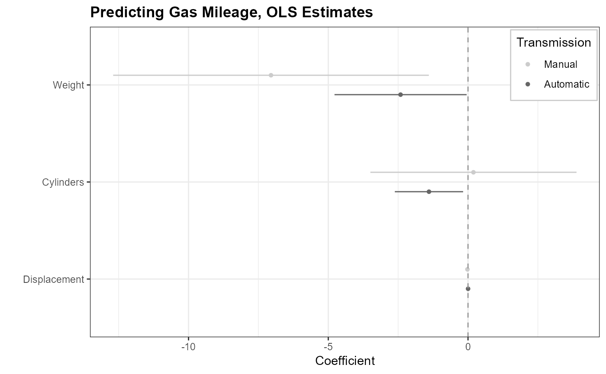

dwplot is a function for quickly and easily generating dot-and-whisker plots of regression models saved in tidy data frames.
dwplot( x, ci = 0.95, dodge_size = 0.4, vars_order = NULL, show_intercept = FALSE, margins = FALSE, model_name = "model", model_order = NULL, style = c("dotwhisker", "distribution"), by_2sd = FALSE, vline = NULL, dot_args = list(size = 1.2), whisker_args = list(size = 0.5), dist_args = list(alpha = 0.5), line_args = list(alpha = 0.75, size = 1), ... ) dw_plot( x, ci = 0.95, dodge_size = 0.4, vars_order = NULL, show_intercept = FALSE, margins = FALSE, model_name = "model", model_order = NULL, style = c("dotwhisker", "distribution"), by_2sd = FALSE, vline = NULL, dot_args = list(size = 1.2), whisker_args = list(size = 0.5), dist_args = list(alpha = 0.5), line_args = list(alpha = 0.75, size = 1), ... )
| x | Either a model object to be tidied with |
|---|---|
| ci | A number indicating the level of confidence intervals; the default is .95. |
| dodge_size | A number indicating how much vertical separation should be between different models' coefficients when multiple models are graphed in a single plot. Lower values tend to look better when the number of independent variables is small, while a higher value may be helpful when many models appear on the same plot; the default is 0.4. |
| vars_order | A vector of variable names that specifies the order in which the variables are to appear along the y-axis of the plot. Note that the order will be overwritten by |
| show_intercept | A logical constant indicating whether the coefficient of the intercept term should be plotted. |
| margins | A logical value indicating whether presenting the average marginal effects of the estimates. See the Details for more information. |
| model_name | The name of a variable that distinguishes separate models within a tidy data frame. |
| model_order | A character vector defining the order of the models when multiple models are involved. |
| style | Either |
| by_2sd | When x is model object or list of model objects, should the coefficients for predictors that are not binary be rescaled by twice the standard deviation of these variables in the dataset analyzed, per Gelman (2008)? Defaults to |
| vline | A |
| dot_args | When |
| whisker_args | When |
| dist_args | When |
| line_args | When |
| ... | Extra arguments to pass to |
The function returns a ggplot object.
dwplot visualizes regression model objects or regression results saved in tidy data frames as dot-and-whisker plots generated by ggplot.
Tidy data frames to be plotted should include the variables term (names of predictors), estimate (corresponding estimates of coefficients or other quantities of interest), std.error (corresponding standard errors), and optionally model (when multiple models are desired on a single plot; a different name for this last variable may be specified using the model_name argument).
In place of std.error one may substitute conf.low (the lower bounds of the confidence intervals of each estimate) and conf.high (the corresponding upper bounds).
For convenience, dwplot also accepts as input those model objects that can be tidied by tidy (or tidy_parameters, parameters (with proper formatting)), or a list of such model objects.
By default, the plot will display 95-percent confidence intervals. To display a different interval when passing a model object or objects, specify a ci argument. When passing a data frame of results, include the variables conf.low and conf.high describing the bounds of the desired interval.
Because the function can take a data frame as input, it is easily employed for a wide range of models, including those not supported by broom, broomExtra, or parameters.
And because the output is a ggplot object, it can easily be further customized with any additional arguments and layers supported by ggplot2.
Together, these two features make dwplot extremely flexible.
dwplot provides an option to present the average marginal effect directly based on margins. Users can alter the confidence intervals of the margins through the ci argument. See the full list of supported functions in the document of the package margins. The `margins` argument also works for small_multiple and secret_weapon.
Kastellec, Jonathan P. and Leoni, Eduardo L. 2007. "Using Graphs Instead of Tables in Political Science." *Perspectives on Politics*, 5(4):755-771.
Gelman, Andrew. 2008. "Scaling Regression Inputs by Dividing by Two Standard Deviations." *Statistics in Medicine*, 27:2865-2873.
library(dplyr) # Plot regression coefficients from a single model object data(mtcars) m1 <- lm(mpg ~ wt + cyl + disp, data = mtcars) dwplot(m1, vline = geom_vline(xintercept = 0, colour = "grey50", linetype = 2)) + xlab("Coefficient")# using 99% confidence interval dwplot(m1, ci = .99)# Plot regression coefficients from multiple models m2 <- update(m1, . ~ . - disp) dwplot(list(full = m1, nodisp = m2))# Change the appearance of dots and whiskers dwplot(m1, dot_args = list(size = 3, pch = 21, fill = "white"))# Plot regression coefficients from multiple models on the fly mtcars %>% split(.$am) %>% purrr::map(~ lm(mpg ~ wt + cyl + disp, data = .x)) %>% dwplot() %>% relabel_predictors(c(wt = "Weight", cyl = "Cylinders", disp = "Displacement")) + theme_bw() + xlab("Coefficient") + ylab("") + geom_vline(xintercept = 0, colour = "grey60", linetype = 2) + ggtitle("Predicting Gas Mileage, OLS Estimates") + theme(plot.title = element_text(face = "bold"), legend.position = c(.995, .99), legend.justification = c(1, 1), legend.background = element_rect(colour="grey80"), legend.title.align = .5) + scale_colour_grey(start = .4, end = .8, name = "Transmission", breaks = c("Model 0", "Model 1"), labels = c("Automatic", "Manual"))